AUTOLAB INTERIOR STUDIO
L5-R1 / OWNER REVIEW / 04 NOVEMBER 2026
An interior.
A signature. Yours.
Warm ivory. A graphite cabin. Material detail given room to speak. The approved editorial direction, refined with authentic identity and visible interaction.
Proposal only. Editorial direction is provisionally approved; implementation is not authorized. These screens use our existing model captures. No production interface, geometry or runtime changed.
01 / Watch the interaction
Actual browser recording of the isolated prototype. Keyboard, arrows and swipe are available in the live review file. The cabin uses recorded views; this is not live 3D interpolation or a performance test.
02 / Desktop
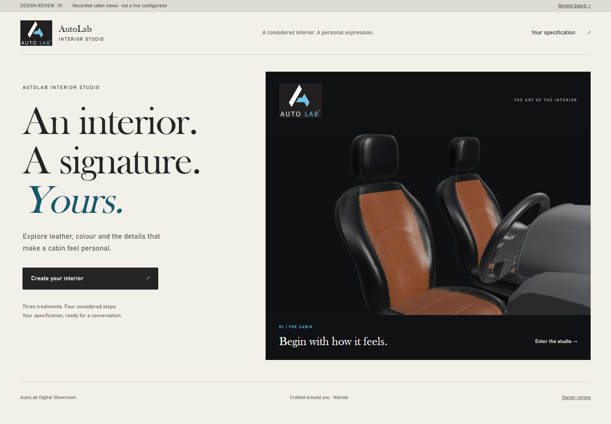
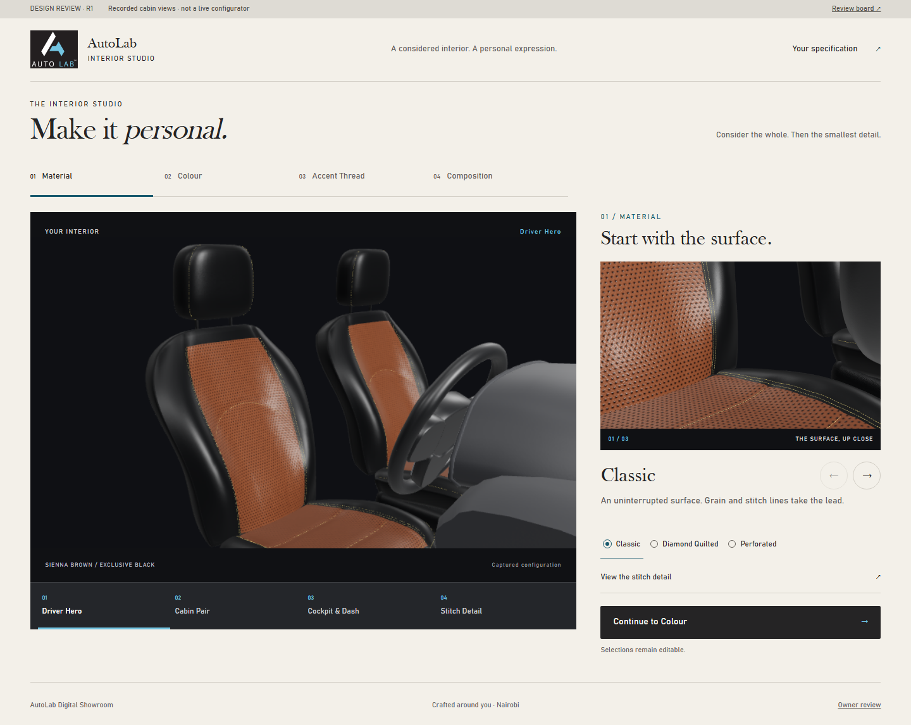
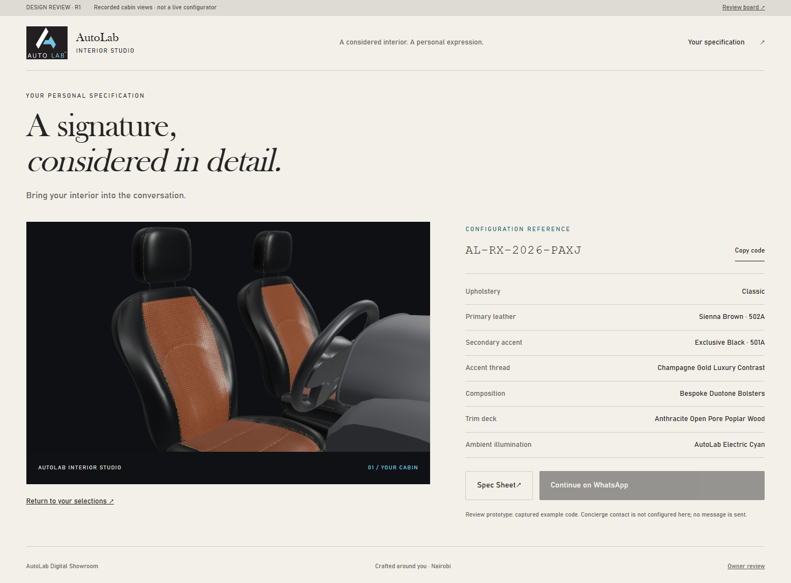
03 / Mobile
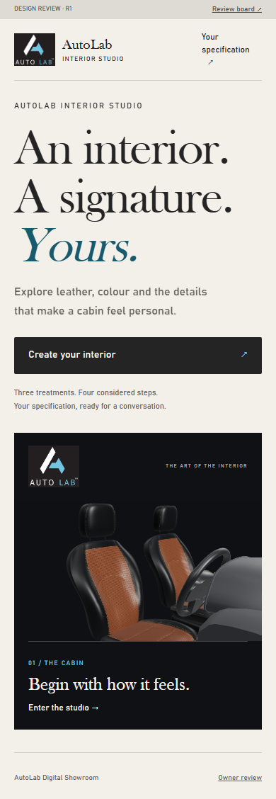
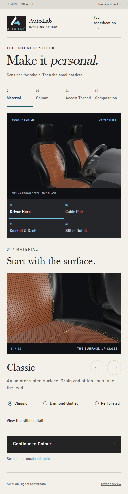
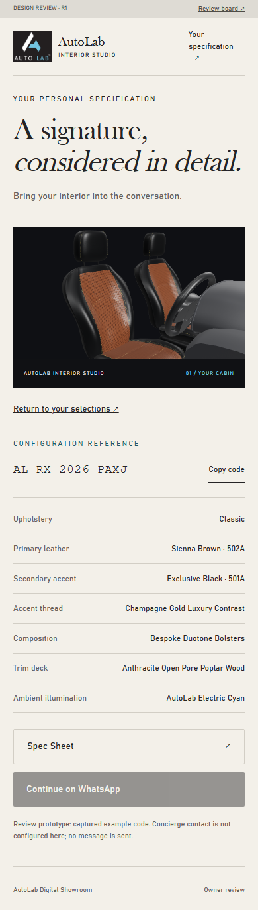
04 / Motion storyboard
Each frame below is a real prototype capture after its transition. The video shows movement; timings describe CSS targets, not measured device performance.

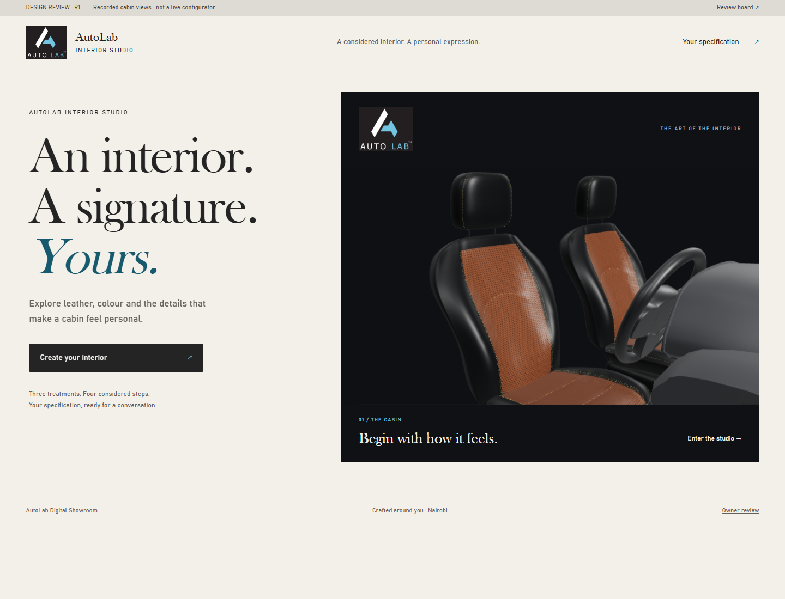


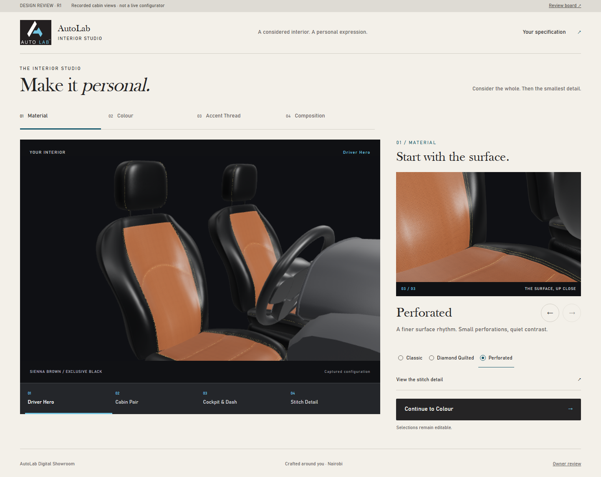

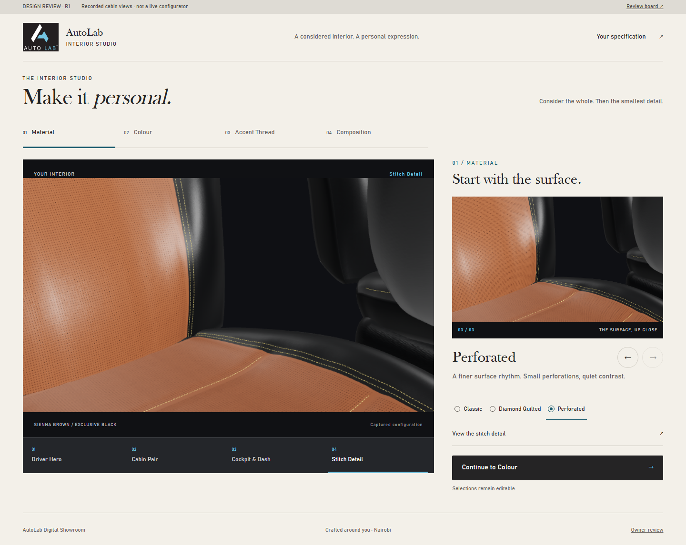

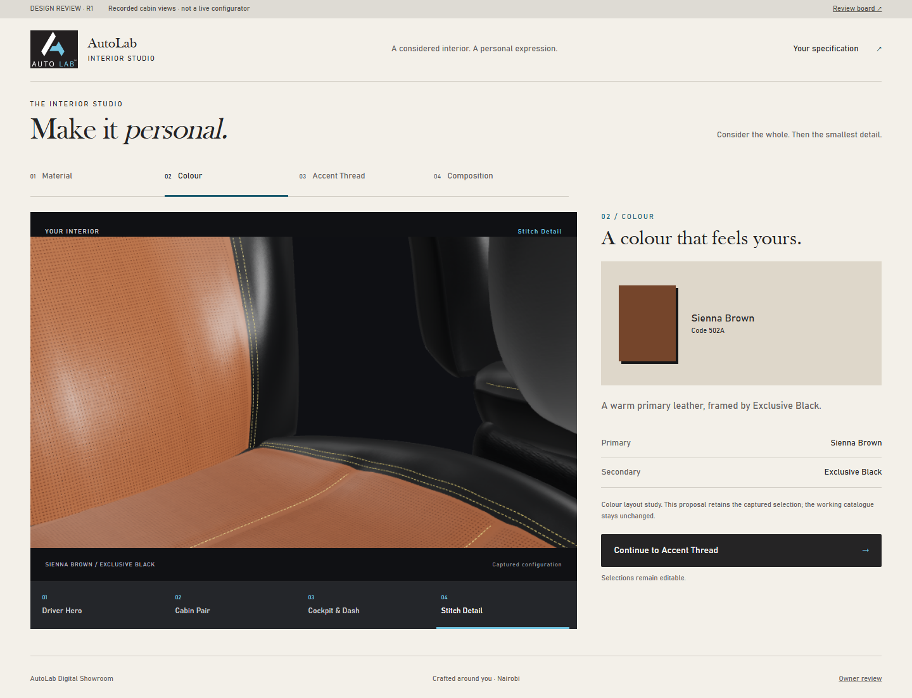

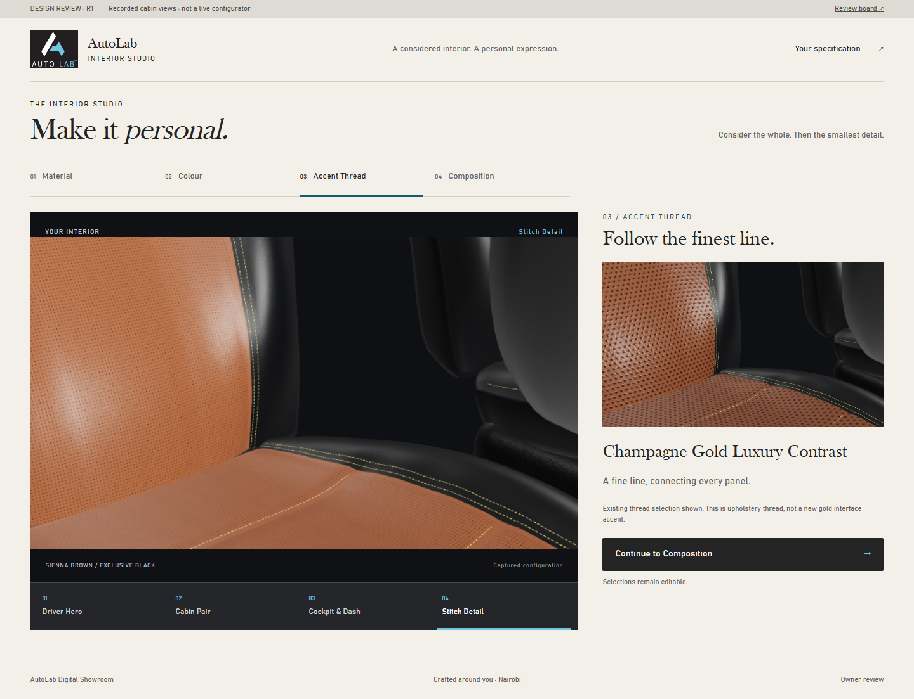

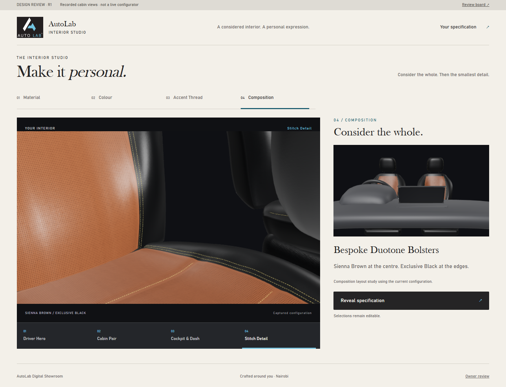

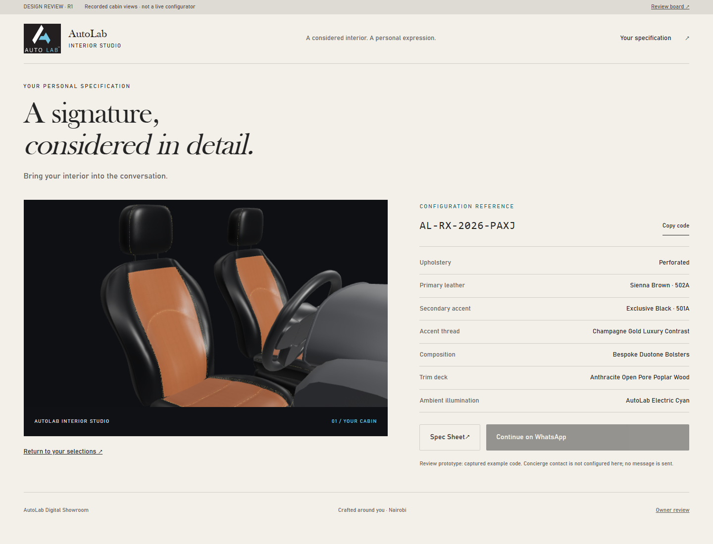

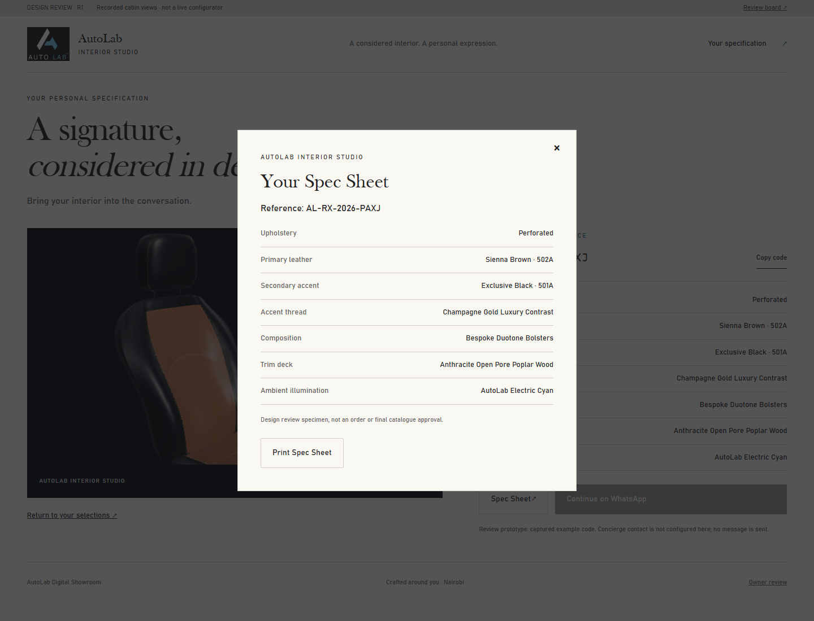
05 / What the benchmark changes
Carlex's material emphasis informed larger close-ups, concise captions and a connection between detail and cabin context. AutoLab retains its own identity, original layout and three existing treatments. No benchmark assets or code are reused.
Reviewed benchmark: Carlex Dubai · Historical L5 board
Owner review: identity, typography direction, material comparison, motion and desktop/mobile hierarchy. Existing model defects and embedded wheel emblem remain visible. No human visual gate is closed.